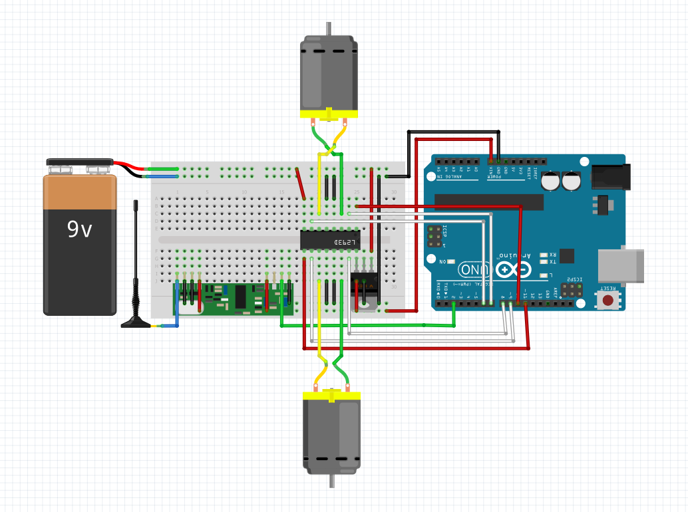

This repository is the code base for the Arduino Car controlled remotely through ROS.
To run, load rx and tx to the arduinos with the respective hardware configurations.
Then install the ros package under arduino_rc_car and launch the controller.
Get the CAD from here.
The bulk of the chassis can be 3d printed.
In my case, I couldn't find a good caster wheel, so I 3d printed the wheel and mounted it with sheet metal.
As for the main wheel, I recommend buying them. The dimensions are specified in the CAD file.

The receiver is connected to the arduino.

The transmitter should be connected to your computer.
Build the ros package to remotely control the arduino.
bash export CATKIN_WORKSPACE=${HOME}/catkin_ws #REPLACE WITH YOUR OWN git clone git@github.com:yycho0108/ArduinoRemoteCar.git cp ArduinoRemoteCar/arduino_rc_car ${CATKIN_WORKSPACE}/src cd ${CATKIN_WORKSPACE} catkin_make --pkg arduino_rc_car
Install the arduino library VirtualWire to facilitate RF communication.
Here are on how to install an Arduino Library.
Alternatively, simply run the following script:
bash export ARDUINO_SKETCH_DIR=${HOME}/sketchbook wget http://www.airspayce.com/mikem/arduino/VirtualWire/VirtualWire-1.27.zip unzip VirtualWire-1.27.zip mv VirtualWire ${ARDUINO_SKETCH_DIR}/libraries/VirtualWire
If this fails, check your arduino sketchbook directory.
bash export ARDUINO_SKETCH_DIR=${HOME}/sketchbook sudo apt-get install ros-indigo-rosserial-arduino sudo apt-get install ros-indigo-rosserial cd ${ARDUINO_SKETCH_DIR}/libraries rm -rf ros_lib rosrun rosserial_arduino make_libraries.py
bash roscd arduino_rc_car/launch vim control.launch
bash roslaunch arduino_rc_car control.launch